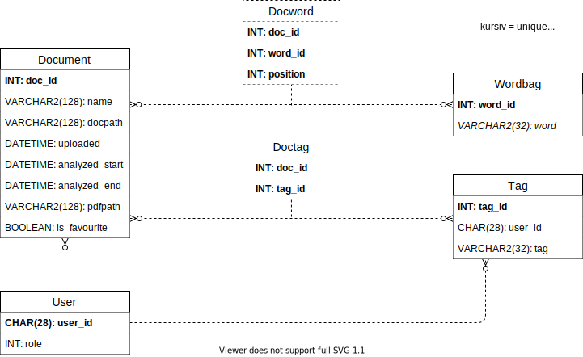
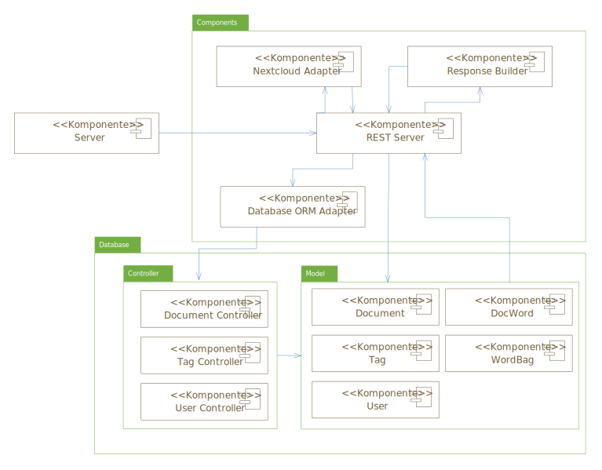
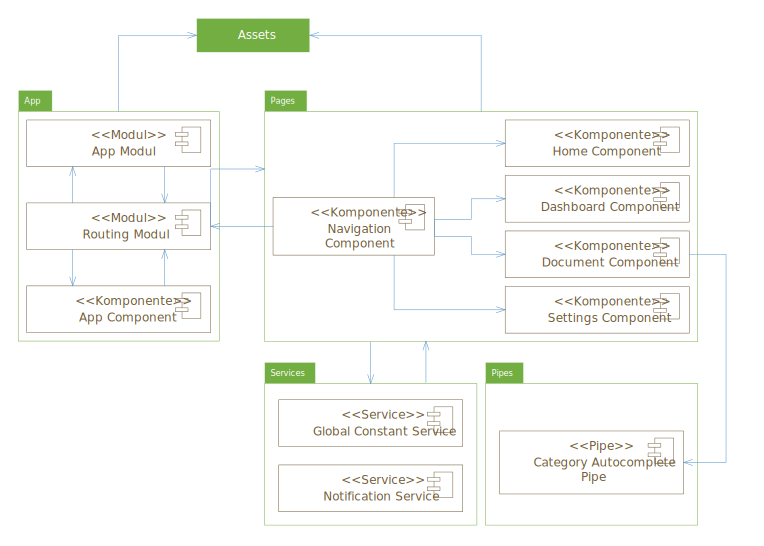
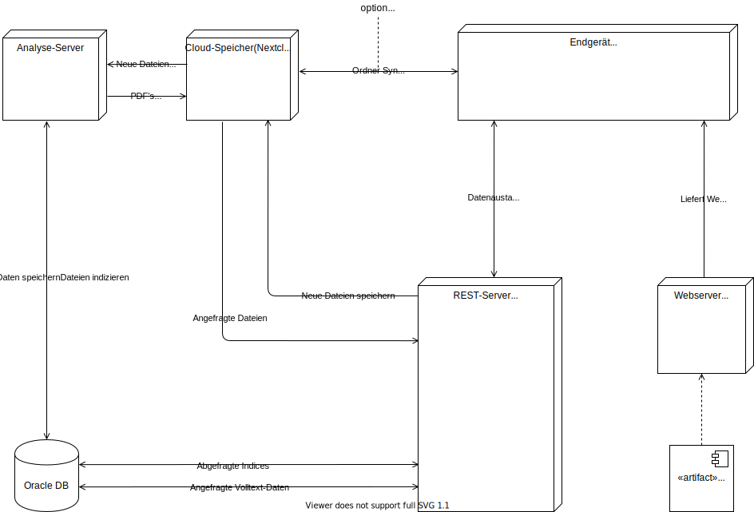

class: center, middle # DocVer Softwarepräsentation ### Ken Madlehn, Andre Grellmann, Pia Schreiner --- class: middle ## Inhalt 1. Idee 2. Live Demo 3. Planung 4. Features 5. Genutzte Technologien 6. Fazit 7. Ausblick ??? ### Idee (1 Min) - Pia - Softwareidee - Zielgruppe ### Live Demo (15 Min) ### Planung (15 Min) - Mockups (1 Min) - Pia - Datenbankentwurf (3 Min) - Andre - Systementwurf (5 Min) - Frontend/Backend (Pia) - Gesamtüberblick (Andre) - Kommunikation (3 Min) - Andre - Offline Nutzung Konzeption (3 Min) - Pia ### Features (1 Min- 1 Folie als Übersicht) - Pia - Nutzereinstellungen - Dokumentenverwaltung mit Klassifizierung - Dokumentensuche - Nutzereinstellungen ### Genutzte Technologien (27 Min) - Docker (1 Min) - Ken - OCR (8 Min) - Ken - Nextcloud (2 Min) - Andre - Oracle DB (8 Min) - Ken - Node JS (4 Min) - Pia - Angular (4 Min) - Pia ### Fazit (1 Min) - Andre ### Ausblick (1 Min) - Andre --- ## Idee --- class: middle, center # Live Demo --- class: middle, center # Planung --- ## Mockup - Desktop Ansicht .center[<img src="img/DokumentView.png" width="95%">] --- ## Mockup - Mobile Ansicht .center[<img src="img/MobileView.png" width="75%">] --- ## Datenbankentwurf - ER Diagramm .center[] --- ## Datenbankentwurf - Functions .table.table-striped.mt-5[ |Name | Beschreibung| |--------|---------| | F_DOC_SEARCH_BY_KEYWORDS | Gibt eine Liste mit DokumentenIds, die min. eines der Keywords enthalten, zurück. | | F_DOC_GET_FULLTEXT | Setzt den gemerierten Text eines Dokuments zusammen und gibt ihn zurück. | | F_DOC_STORE_ANALYSED | Speichert alle, beim analysieren generierte, Daten in der Datenbank. | ] --- ## Systementwurf - Node Backend .center[] --- ## Systementwurf - Angular Webanwendung .center[] --- ## Systementwurf - Gesamtüberblick .center[] --- ## Kommunikation - Allgemein .content-middle[ 1. Frontend ⇄ Backend (HTTP) 2. Backend ⇄ Datenbank (TCP) 3. Backend ⇄ Nextcloud (HTTP) ] --- ## Kommunikation - Ablauf .center[<img src="img/Sequenzdiagramm.svg" width="95%">] --- ## Offline Nutzung --- ## Features #### Dokumentenverwaltung mit Klassifizierung - Übersichtliche Darstellung aller Dokumente - Hochladen von Dokumenten - OCR Analyse hochgeladener Dokumente - Detailansicht mit Originaldatei, Volltextvorschau und generierter PDF - Klassifierung in Kategorien - Dashboardansicht #### Dokumentensuche - Filterung der Tabelle anhand von Metadaten - Serverseitige Inhaltssuche basierend auf Keywords #### Nutzereinstellungen - Nutzerdatenverwaltung - Kategorieverwaltung ??? ### Dokumentenverwaltung mit Klassifizierung - Nutzer können Dokumente hochladen um diese zu verwalten - Verwaltete Dokumente werden in einer übersichtlichen Liste dargestellt - In der Detailansicht eines Dokuments, können Nutzer die Originaldatei, eine Volltextvorschau sowie die generierte PDF einsegen - Zur besseren Übersicht können Dokumente mit Hilfe von Kategorien klassifiziert werden - Für die Klassizierung werden Standard Kategorien angeboten. - Nutzer haben Zugriff auf eine Dashboardansicht, welche die letzten Dokumente sowie die Favoriten darstellt ### Dokumentensuche - Filterung der Tabelle anhand von Metadaten (Name, Upload, Kategorien) - Dabei ist eine Filterung der Tabelle sowie eine Inhaltssuche welche den Inhalt der Dokumente filtert möglich ### Nutzereinstellungen - Nutzer können sich registrieren sowie ihre Nutzerdaten aktualisieren - Jeder Nutzer hat die Möglichkeit eigene Kategorien anzulegen --- class: middle, center # Genutzte Technologien --- ## Docker als Environment --- ## OCR --- ## Oracle Datenbank --- ## Node Backend --- ## Angular Webanwendung --- ## Nextcloud --- ## Fazit --- ## Ausblick --- class: middle, center # Vielen Dank für die Aufmersamkeit! ## Gibt es Fragen?